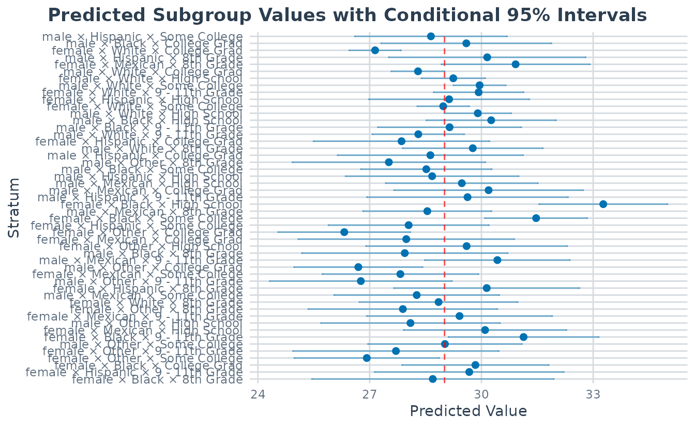
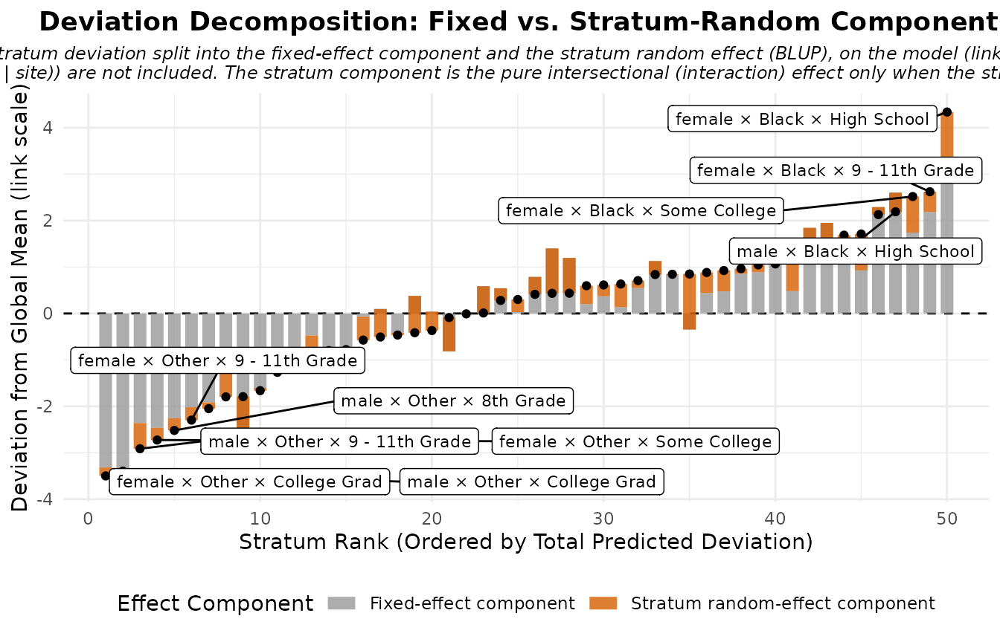
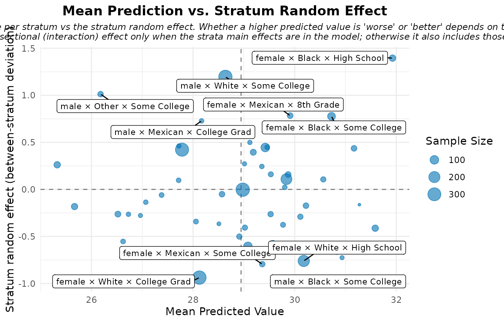
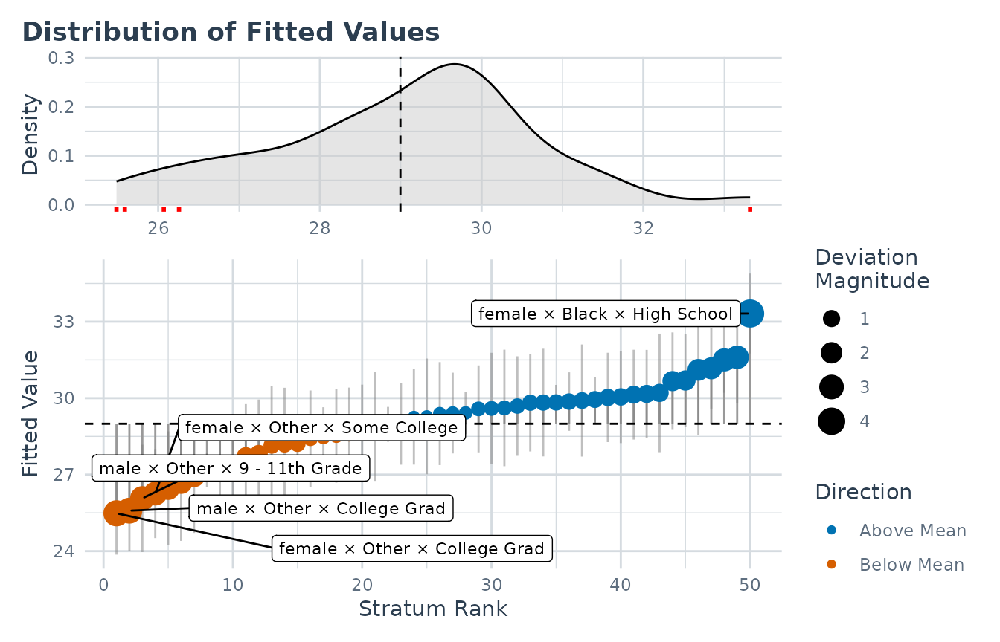
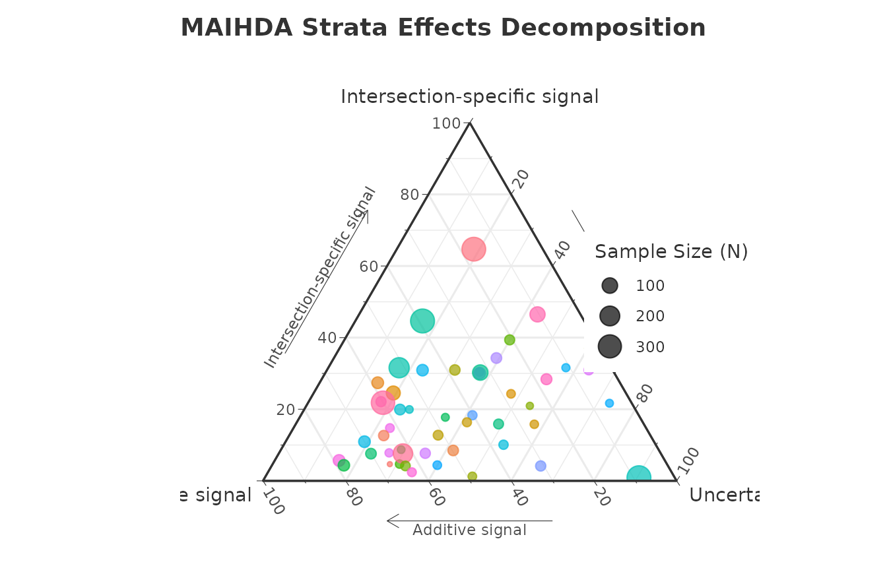

Introduction
The MAIHDA package provides specialized tools for conducting Multilevel Analysis of Individual Heterogeneity and Discriminatory Accuracy. This modern epidemiological approach is highly effective for investigating intersectional health inequalities and understanding how joint social categories (e.g., Race x Gender x Education) influence individual outcomes.
By utilizing multilevel mixed-effects models (via lme4
or brms), MAIHDA allows researchers to: 1. Automatically
construct intersectional strata. 2. Estimate between-stratum variance
and Variance Partition Coefficients (VPC). 3. Evaluate the Proportional
Change in Variance (PCV): a descriptive, model-dependent measure of how
much the between-stratum variance changes when additive main effects are
added (it is not a causal decomposition, and a negative PCV does not by
itself establish hidden structural inequality). 4. Launch an interactive
Shiny Dashboard for code-free analysis.
The fastest way in is the maihda() function: a single
call runs the whole standard analysis and returns one object you can
print(), summary(), and plot().
This vignette leads with that workflow, then opens it up to show the
lower-level building blocks (fit_maihda() and friends) for
when you need finer control.
Installation
# Released version (CRAN):
install.packages("MAIHDA")
# Development version (GitHub):
# install.packages("remotes")
# remotes::install_github("hdbt/MAIHDA")The data
The package includes a pedagogical subset of the National Health and
Nutrition Examination Survey (maihda_health_data). We use
it to examine how Body Mass Index (BMI) varies across intersectional
demographic groups.
library(MAIHDA)
data("maihda_health_data")
# A few sections below add individual-level covariates (Age, Poverty) or compare
# variances across models.
health_complete <- maihda_health_data[complete.cases(
maihda_health_data[, c("BMI", "Age", "Gender", "Race", "Education", "Poverty")]
), ]The maihda() workflow
maihda() runs the standard MAIHDA pipeline in a single
call. It is intrinsically a two-model decomposition: it fits the null
model (the intersectional random intercept, excluding the stratum
dimensions’ main effects) and the adjusted model (the null plus the
additive main effects of the stratum dimensions), summarises the null
model’s VPC/ICC, and reports the PCV – the proportional change in
between-stratum variance from null to adjusted, i.e. the additive share
of the intersectional inequality.
Write the stratum dimensions’ main effects in the formula and
maihda() treats it as the fully-specified adjusted model,
deriving the null by dropping them. (Omit them –
BMI ~ 1 + (1 | Gender:Race:Education) – and
maihda() adds them to the adjusted model for you, with a
message(), so the decomposition stays explicit.) Either way
maihda() fits both models on the same analytic sample.
analysis <- maihda(
BMI ~ Gender + Race + Education + (1 | Gender:Race:Education),
data = health_complete
)
analysis # VPC/ICC (null) and PCV (null -> adjusted)
#> MAIHDA Analysis
#> ===============
#>
#> Null formula: BMI ~ (1 | stratum)
#> Adjusted formula:BMI ~ Gender + Race + Education + (1 | stratum)
#> Engine: lme4 | Family: gaussian
#> VPC/ICC (null): 0.0636
#> PCV (null -> adjusted): 0.8263
#> Between-stratum variance: 2.8308 (null) -> 0.4918 (adjusted)
#> ~82.6% of the between-stratum variance is additive (the dimensions' main
#> effects); the remainder is the between-stratum variance remaining after the
#> additive main effects -- a model-dependent quantity
#> Strata: 50
#> Intersectional interactions: 2 of 50 strata flagged (95% interval, no multiplicity correction)
#> strongest: male × White × Some College (+1.196, above)
#> uncorrected across 50 strata; maihda_interactions(x, adjust = "BH") for an FDR screen
#>
#> Use summary() for variance components and plot(type = ...) for figures.
analysis$formula # null: BMI ~ (1 | stratum)
#> BMI ~ (1 | stratum)
#> <environment: 0x55e0761ed7d8>
analysis$adjusted_formula # adjusted: BMI ~ Gender + Race + Education + (1 | stratum)
#> BMI ~ Gender + Race + Education + (1 | stratum)
#> <environment: 0x55e0813cb808>The returned object carries everything: the full variance components, the PCV decomposition, and both fitted models.
summary(analysis) # variance components, VPC/ICC, stratum estimates
#> MAIHDA Model Summary
#> ====================
#>
#> Variance Partition Coefficient (VPC/ICC):
#> Estimate: 0.0636
#>
#> Variance Components:
#> component variance sd proportion
#> Between-stratum (random) 2.932 1.712 0.06357
#> Within-stratum (residual) 43.187 6.572 0.93643
#> Total 46.118 6.791 1.00000
#>
#> Fixed Effects:
#> term estimate
#> (Intercept) 29.01
#>
#> Stratum Estimates (first 10):
#> stratum stratum_id label random_effect se
#> 1 1 male × Hispanic × Some College -0.3652 1.0426
#> 2 2 male × Black × College Grad 0.5847 1.1667
#> 3 3 female × White × College Grad -1.8639 0.3550
#> 4 4 male × Hispanic × 8th Grade 1.1454 1.3490
#> 5 5 female × Mexican × 8th Grade 1.9078 1.0173
#> 6 6 male × White × College Grad -0.7119 0.3652
#> 7 7 female × White × High School 0.2352 0.4374
#> 8 8 male × White × Some College 0.9413 0.3587
#> 9 9 female × White × 9 - 11th Grade 0.9152 0.6162
#> 10 10 female × Hispanic × High School 0.1229 1.0994
#> lower_95 upper_95
#> -2.40868 1.678302
#> -1.70198 2.871286
#> -2.55965 -1.168149
#> -1.49872 3.789553
#> -0.08613 3.901702
#> -1.42775 0.004003
#> -0.62207 1.092543
#> 0.23837 1.644306
#> -0.29260 2.122989
#> -2.03195 2.277736
#> ... and 40 more strata
analysis$pcv # proportional change in between-stratum variance
#> Proportional Change in Variance (PCV)
#> =====================================
#>
#> PCV: 0.8263
#>
#> Between-stratum variance:
#> Model 1: 2.830755
#> Model 2: 0.491811
#> Change: 2.338944 (82.63%)
#>
#> Interpretation (PCV is the proportional change in between-stratum
#> variance between the models):
#> Between-stratum variance is 82.6% lower in Model 2 than in Model 1.Interpretation. The VPC/ICC tells us what share of the total variance in BMI lies between the intersectional social groups rather than within them. The PCV tells us how much of that between-stratum variance is the additive sum of the dimensions’ main effects: if the variance drops substantially (high PCV), the between-stratum differences are largely additive; what remains is often read as the intersectional interaction. The PCV is a model-dependent variance change, not a causal decomposition, and a low or negative value does not by itself automatically prove a true interaction (it can also reflect suppression, rescaling on the latent scale for non-Gaussian models, sample composition, or estimation uncertainty).
For publication-ready uncertainty, add bootstrap = TRUE
(with n_boot) to attach parametric-bootstrap confidence
intervals to the VPC and PCV. It refits the models many times, so it is
omitted here.
Visual diagnostics
The dedicated plot interpretation vignette explains how to read each one.
# Variance partition (VPC) -- null model
plot(analysis, type = "vpc")
# Predicted stratum values with 95% CIs -- null model
plot(analysis, type = "predicted")
# Additive versus intersectional effect decomposition -- adjusted model
plot(analysis, type = "effect_decomp")
# Mean predicted outcome against the stratum random effect -- adjusted model
plot(analysis, type = "risk_vs_effect")
# Individual prediction-deviance dashboard -- adjusted model
plot(analysis, type = "prediction_deviation")
The ternary diagnostic needs the optional ggtern
package, so it is only drawn when that package is installed:
# Ternary diagnostic: additive vs intersection-specific signal vs uncertainty
plot(analysis, type = "ternary")
A crossed-dimensions alternative
Alongside the two-model PCV, maihda() offers a
crossed-dimensions decomposition
(decomposition = "crossed-dimensions") that estimates the
additive and interaction parts from a single model entering each
dimension’s main effect as a random intercept rather than a fixed
effect. See
vignette("cross_classified", package = "MAIHDA").
A contextual cross-classified model
To model the strata crossed with a higher-level place or
institution – the literature’s cross-classified MAIHDA (patients within
strata and hospitals, students within strata and schools) – pass
context = "school" to maihda() or
fit_maihda(). The summary then partitions the unexplained
variance into between-stratum vs. between-context vs. residual, and the
headline VPC/ICC becomes the between-stratum share conditional on the
context random effect. Also covered in
vignette("cross_classified", package = "MAIHDA").
Design-weighted MAIHDA (survey data)
For complex-survey data (NHANES, PISA, …), pass the sampling-weight
column via sampling_weights. Survey weights are not lme4’s
weights= (those are precision weights, which rescale the
residual variance), so the fit routes through WeMix::mix()
weighted pseudo-maximum-likelihood. The whole workflow (VPC/ICC, PCV,
stratum summaries, prediction, plots, and the AUC for binary outcomes)
is then design-weighted, with design-consistent standard errors for the
fixed effects:
weighted <- maihda(outcome ~ age + (1 | gender:race:education),
data = survey_data, sampling_weights = "person_weight")
weightedThe wemix engine covers gaussian(identity) /
binomial(logit) MAIHDA with the single
(1 | stratum) intercept; crossed random effects
(context =,
decomposition = "crossed-dimensions") and bootstrap
intervals require lme4/brms. engine = "brms" also accepts
sampling_weights, as likelihood weights (a pseudo-posterior
with design-consistent point estimates, but credible intervals that are
not design-based).
Comparing across groups
Add a higher-level grouping variable and maihda() also
compares the decomposition across its levels.
maihda_country_data (OECD PISA 2018) has a real country
grouping – it asks how much the joint gender x socioeconomic-status
inequality in mathematics achievement differs across six countries. This
workflow has its own group comparison
vignette, so here we just point to it:
Under the hood: the building blocks
maihda() is a convenience wrapper around a set of
lower-level functions: fit_maihda() fits one model,
calculate_pvc() compares two, summary() reads
the variance components, and compare_maihda_groups() runs
the group comparison. Reach for them directly when you need finer
control than the one-call workflow gives. In particular, a custom
adjusted model, a stepwise decomposition, or the discriminatory-accuracy
extensions for binary outcomes.
Fit a single model
fit_maihda() builds the intersectional strata on the fly
and fits one multilevel model. Use it when you only want a single fit,
e.g. the null-model VPC on its own.
model_null <- fit_maihda(BMI ~ 1 + (1 | Gender:Race:Education), data = health_complete)
summary(model_null)
#> MAIHDA Model Summary
#> ====================
#>
#> Variance Partition Coefficient (VPC/ICC):
#> Estimate: 0.0636
#>
#> Variance Components:
#> component variance sd proportion
#> Between-stratum (random) 2.932 1.712 0.06357
#> Within-stratum (residual) 43.187 6.572 0.93643
#> Total 46.118 6.791 1.00000
#>
#> Fixed Effects:
#> term estimate
#> (Intercept) 29.01
#>
#> Stratum Estimates (first 10):
#> stratum stratum_id label random_effect se
#> 1 1 male × Hispanic × Some College -0.3652 1.0426
#> 2 2 male × Black × College Grad 0.5847 1.1667
#> 3 3 female × White × College Grad -1.8639 0.3550
#> 4 4 male × Hispanic × 8th Grade 1.1454 1.3490
#> 5 5 female × Mexican × 8th Grade 1.9078 1.0173
#> 6 6 male × White × College Grad -0.7119 0.3652
#> 7 7 female × White × High School 0.2352 0.4374
#> 8 8 male × White × Some College 0.9413 0.3587
#> 9 9 female × White × 9 - 11th Grade 0.9152 0.6162
#> 10 10 female × Hispanic × High School 0.1229 1.0994
#> lower_95 upper_95
#> -2.40868 1.678302
#> -1.70198 2.871286
#> -2.55965 -1.168149
#> -1.49872 3.789553
#> -0.08613 3.901702
#> -1.42775 0.004003
#> -0.62207 1.092543
#> 0.23837 1.644306
#> -0.29260 2.122989
#> -2.03195 2.277736
#> ... and 40 more strataA custom adjusted model and the PCV
maihda() only ever adds the stratum dimensions’ own main
effects to the adjusted model. To ask a different question (like how
much of the between-stratum variance is explained by individual-level
covariates that are not strata dimensions, here Age and Poverty) build
the two models yourself and compare them with
calculate_pvc(). PCV compares variances across models, so
both must use the same sample (the health_complete data we
prepared above):
model_cov <- fit_maihda(BMI ~ Age + Poverty + (1 | Gender:Race:Education),
data = health_complete)
calculate_pvc(model_null, model_cov)
#> Proportional Change in Variance (PCV)
#> =====================================
#>
#> PCV: 0.0887
#>
#> Between-stratum variance:
#> Model 1: 2.830755
#> Model 2: 2.579769
#> Change: 0.250986 (8.87%)
#>
#> Interpretation (PCV is the proportional change in between-stratum
#> variance between the models):
#> Between-stratum variance is 8.9% lower in Model 2 than in Model 1.This PCV answers “how much between-stratum variance do Age and
Poverty account for?”, which is distinct from the additive-share PCV
that maihda() reports. Add bootstrap = TRUE
for parametric-bootstrap confidence intervals (omitted here because it
refits the model many times):
calculate_pvc(model_null, model_cov, bootstrap = TRUE, n_boot = 500)Stepwise PCV
Often researchers want to know exactly which variable
explained the variance. stepwise_pcv() adds covariates
one-by-one and tracks the between-stratum variance dynamically. It works
on a data frame that already carries the stratum column –
the maihda() object exposes one ready to use as
analysis$model$original_data:
stepwise_results <- stepwise_pcv(
data = analysis$model$original_data, # carries the strata column
outcome = "BMI",
vars = c("Age", "Gender", "Race", "Education", "Poverty")
)
print(stepwise_results)
#> Step Model Added_Variable Variance Step_PCV Total_PCV
#> 0 Null Model None (Intercept only) 2.8308 0.00000 0.00000
#> 1 Model 1 Age 2.7605 0.02481 0.02481
#> 2 Model 2 Gender 2.7194 0.01489 0.03933
#> 3 Model 3 Race 0.9892 0.63625 0.65056
#> 4 Model 4 Education 0.4769 0.51789 0.83153
#> 5 Model 5 Poverty 0.4698 0.01480 0.83402Negative step PCVs in this table indicate an “unmasking”/suppression pattern: adding a variable increased the between-stratum variance. This is a model-dependent change in variance, not proof that a hidden structural inequality was causally revealed (a negative PCV can also reflect suppression, rescaling, sample composition, or estimation uncertainty).
Discriminatory accuracy and the response-scale VPC
For a binary outcome the discriminatory accuracy (AUC / C-statistic
and Median Odds Ratio) is reported automatically. It rides along on the
maihda() summaries and headline print() (and
on summary(fit_maihda(...))), so the strata’s AUC sits next
to the VPC with no extra call. The probability-scale (response) VPC is
estimated by simulation, so it is opt-in: add
response_vpc = TRUE (with a seed). You can
still call the helpers directly on the fitted models when you want them
on their own:
# A binary-outcome analysis
ob <- maihda(Obese ~ Gender + Race + (1 | Gender:Race), data = maihda_health_data,
response_vpc = TRUE, seed = 1)
ob
summary(ob) # carries the discriminatory_accuracy (+ vpc_response) slots
# ...or call the pieces directly on the fitted maihda_model objects:
maihda_discriminatory_accuracy(ob$model) # AUC + MOR, null model
maihda_discriminatory_accuracy(ob$model_adjusted) # adjusted model
maihda_vpc_response(ob$model, seed = 1) # probability-scale VPCThe dedicated binary outcomes vignette walks through the logistic model, the latent-scale VPC, and this discriminatory-accuracy recipe in full.
The group comparison directly
compare_maihda_groups() is the function
maihda(group = ...) calls under the hood. Use it directly
for the same stratified comparison without the rest of the one-call
pipeline:
data("maihda_country_data")
compare_maihda_groups(math ~ 1 + (1 | gender:ses),
data = maihda_country_data, group = "country")Where to next
This vignette is the hub for the rest of the documentation:
- MAIHDA for binary outcomes – logistic MAIHDA, the latent-scale VPC, and a discriminatory-accuracy (AUC) recipe.
- Interpreting MAIHDA plots and diagnostics – how to read every plot type shown above, and what not to conclude from each.
-
Comparing intersectional
inequality across groups – the full
maihda(group = ...)/compare_maihda_groups()workflow. -
Crossed random effects:
dimensions and contexts – the single-model
additive-vs-interaction (crossed-dimensions) alternative to the
two-model PCV, and the contextual cross-classified MAIHDA (strata
crossed with schools, hospitals, regions) via
context =. - Interactive data analysis – the no-code Shiny dashboard.
Interactive Shiny App
The MAIHDA package ships with a fully-featured, interactive Shiny Dashboard.
You can upload your own data (CSV, SPSS .sav, Stata
.dta), dynamically select variables, and compute Stepwise
PCV tables and prediction plots.
# Launch the interactive interface
run_maihda_app()References
Evans, C. R., Williams, D. R., Onnela, J. P., & Subramanian, S. V. (2018). A multilevel approach to modeling health inequalities at the intersection of multiple social identities. Social Science & Medicine, 203, 64-73.
Merlo, J. (2018). Multilevel analysis of individual heterogeneity and discriminatory accuracy (MAIHDA) within an intersectional framework. Social Science & Medicine, 203, 74-80.